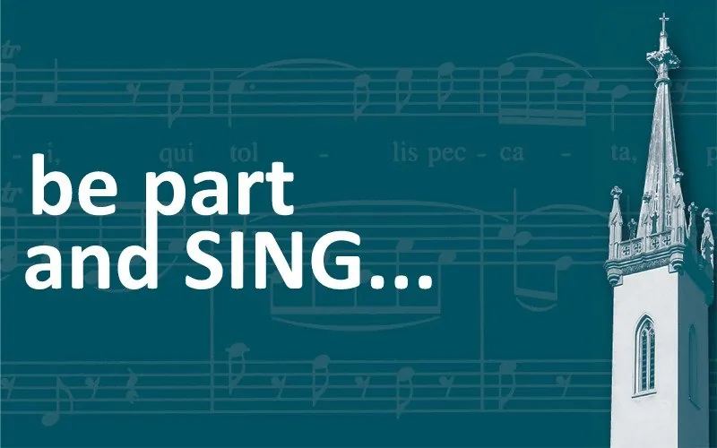

Musique sacrée de Saint-Augustin
Une grande musique.
Une tradition vivante.
Vivez une musique sacrée du plus haut niveau, qui façonne depuis des siècles la vie spirituelle et culturelle de l’église des Augustins et inspire aujourd’hui encore les gens.
Messes solennelles à Saint-Augustin
Des œuvres de Mozart, Haydn, Schubert, Beethoven et d’autres grands compositeurs font de la messe solennelle une expérience musicale inoubliable.
Chœur de Saint-Augustin
À chaque célébration, Dieu se fait proche de son peuple, et l’assemblée répond par sa louange. Le chœur de Saint-Augustin aide l’assemblée en prière à élever son cœur vers Dieu et chante en son nom la louange du Créateur, dans des œuvres classiques comme contemporaines.
Comme l’Église elle-même, un chœur d’église est l’unité dans la diversité, louant Dieu d’une seule voix. De nouveaux chanteurs sont les bienvenus.
Nous accueillons volontiers des chanteuses et chanteurs doués, ayant une expérience du chant choral, qui aiment les grandes messes classiques, ont le temps de participer régulièrement aux répétitions et souhaitent chanter le dimanche à l’église des Augustins.
Le Chœur de chambre de Saint-Augustin

Le chœur de chambre se consacre aux programmes de musique de chambre et aux œuvres a cappella lors d’occasions particulières de l’année liturgique.
Orchestre de Saint-Augustin

L’orchestre est une composante essentielle de la musique sacrée de Saint-Augustin. La plupart de ses musiciens sont des professionnels indépendants, également membres permanents d’ensembles tels que la Wiener Akademie (Martin Haselböck) ou le Concilium musicum (Christoph Angerer). Ils connaissent la pratique d’exécution historique, ce qui profite au répertoire principalement classique et du premier romantisme des messes solennelles.
Des membres des grands orchestres viennois jouent également régulièrement, par exemple de l’Orchestre philharmonique de Vienne, de l’Opéra d’État, du Volksoper et de l’Orchestre symphonique de la Radio de Vienne. Le directeur de la musique sacrée est responsable de la composition de l’orchestre.
Les orgues de Saint-Augustin
L’église des Augustins possède deux orgues : le grand orgue Rieger de 1976 et le petit orgue Reil de 1985, l’« orgue Bach de Vienne ».

L’orgue Rieger
- Construction
- 1976 par Rieger Orgelbau, Schwarzach (Vorarlberg)
- Buffet
- Johann Hencke, 1785
- Taille
- 4 claviers et pédalier, 48 jeux
- Rénovations
- 2002 Eisenbarth (Passau), 2018 nettoyage et 2019 nouveau système de combinaisons par Rieger, 2023 Untersatz de 32′, Zimbelstern et glockenspiel
Le grand orgue a été construit à neuf en 1976 par les facteurs d’orgues Rieger. Le buffet historique de Johann Hencke de 1785 a été conservé. Jusqu’à la Seconde Guerre mondiale, il abritait un instrument que Johann Hencke avait construit pour l’église des Espagnols Noirs et qui fut installé à Saint-Augustin à la fin du XVIIIe siècle. Le groupe d’anges sur le buffet est l’œuvre du sculpteur rococo Johann Baptist Straub.

L’orgue Reil
- Construction
- 1985 par les frères Reil, Heerde (Pays-Bas)
- Taille
- 2 claviers et pédalier, 25 jeux
- Conception
- historique, d’après Gottfried Silbermann et Tobias Trost ; sommiers à registres coulissants, traction mécanique, tempérament Werckmeister III
- Propriétaire
- Paroisse de Saint-Augustin
Le petit orgue a été commandé par le Festival de Vienne pour l’année commémorative « 300 ans de Johann Sebastian Bach » et consacré par le cardinal Franz König, alors archevêque de Vienne. Ses matériaux et sa construction suivent la facture d’orgues de l’époque de Bach, d’où son surnom d’« orgue Bach de Vienne ».
Il est joué lors des offices et des concerts d’orgue.
Parrainage de Saint-Augustin
L’église des Augustins est connue en Autriche et bien au-delà pour ses messes solennelles et, grâce à sa tradition séculaire, est considérée comme un centre de la musique sacrée. Des gens du monde entier viennent y célébrer les messes solennelles avec chœur et orchestre.
Cette tradition vivante est menacée pour des raisons financières. Le chœur chante bénévolement, mais les partitions, les cachets des solistes et de l’orchestre ainsi que l’organisation coûtent très cher. Avec votre soutien, la musique sacrée de Saint-Augustin sera préservée pour l’avenir.
« Puissions-nous tous redevenir plus sensibles à l’art de la musique dans la liturgie. »
Comment faire un don
Nous acceptons volontiers les dons au secrétariat paroissial, à la fin de la messe solennelle ou par virement bancaire. Chaque don aide.
- Compte
- Patenschaft St. Augustin
- Banque
- Raiffeisenlandesbank NÖ-Wien AG
- IBAN
- AT85 3200 0000 1525 3743
- BIC
- RLNWATWW
Ou faites un don simplement en ligne
Faire un don avec PayPalComment nous soutenir
Des informations sont disponibles auprès du curé, le P. Matthias Schlögl, de Mme Margarete Strassnig-Bachner et du bureau de la musique sacrée au secrétariat paroissial. Vous pouvez volontiers indiquer une date ou une messe particulière que vous souhaitez soutenir.
Parrains de Saint-Augustin
Nous remercions tous nos parrains de leur aimable soutien. Liste des parrains de Saint-Augustin
Chanter, c’est prier deux fois.